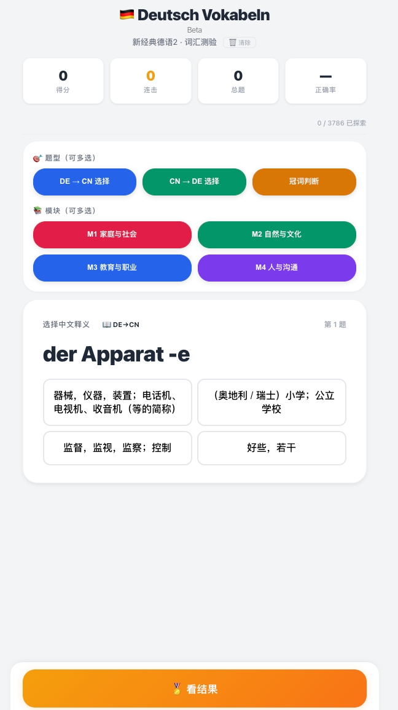
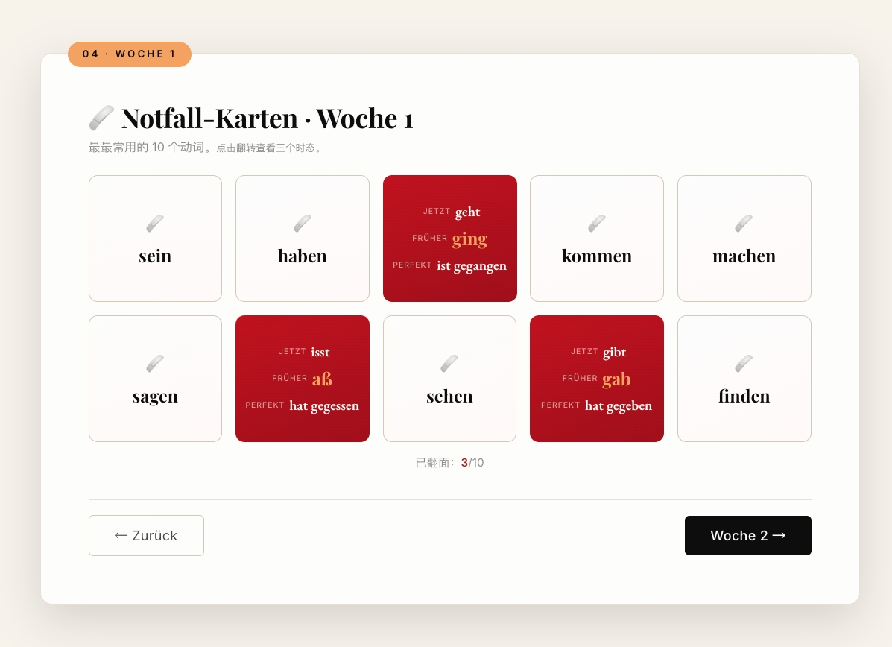

Kapitel 4
AI+课程内容设计
KI-gestützte Kursinhalte
AI草稿生成
KI-Entwurf
→
教师审核优化
Lehrkraft-Prüfung
→
嵌入智能体
Agent-Einbettung
→
课后迭代
24h-Iteration
| 单元 | 主题 | AI嵌入方法 |
|---|---|---|
| L1 | Essen & Trinken 饮食 | AI情境对话·菜单生成·发音评测 |
| L2 | Freizeit & Hobbys 休闲 | AI角色扮演·日程助手·语法纠错 |
| L3 | Wohnen & Stadt 居住城市 | AI地图对话·租房模拟·词汇扩展 |
| L4 | Reisen & Kultur 旅行文化 | AI旅行规划·文化对比·报告生成 |
AI交互式课件界面演示
点击翻转 →

AI交互式课件 · Kursmaterial
课件交互功能展示
点击翻转 →

交互界面 · Interaktion
💡 点击翻转查看交互式课件截图